СССР и Египет:
от первых контактов до геополитического разрыва
История отношений между Советским Союзом и Египтом — это история взлётов и падений: от идеологической неприязни в 1920-е годы до дипломатического признания (1943), пика сотрудничества в эпоху Насера (1955–1970), строительства Асуанской плотины и, наконец, до охлаждения и разрыва при Садате (1972–1976).

1920-е – 1930-е: идеологическое противостояние
После Октябрьской революции 1917 года Советская Россия воспринималась египетской монархией и британскими властями как угроза. Египет (формально независимый с 1922 года, но фактически под британским контролем) не спешил устанавливать отношения с «центром мировой революции». Коминтерн, в свою очередь, видел в Египте объект антиимпериалистической борьбы, но реальных рычагов влияния не имел. В 1920-е – 1930-е годы контакты были эпизодическими и в основном через Коммунистическую партию Египта (В январе 1923 Александрийская секция Социалистической партии Египта (основана в 1921 году) во главе с Хусни Аль-Ораби в ходе проведенного ею в окрестностях Александрии съезда провозгласила себя Египетской коммунистической партией), которая находилась в глубоком подполье и подвергалась репрессиям.

1943: установление дипломатических отношений
Перелом наступил во время Второй мировой войны. В 1943 году, в условиях борьбы с нацистской Германией, СССР и Египет (формально нейтральный до 1945 года) установили дипломатические отношения. Это было прагматичное решение: Москва стремилась расширить своё присутствие на Ближнем Востоке, а Каир искал противовес британскому доминированию. 26 августа 1943 года было подписано соглашение об обмене дипломатическими миссиями — с этого момента начинается официальная история двусторонних отношений.
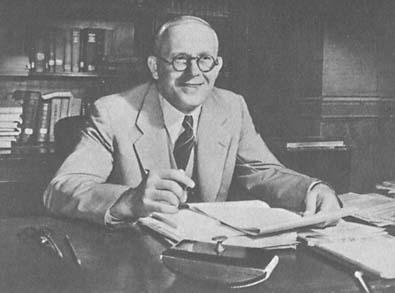
Революция 1952 года и поворот к СССР
После свержения монархии «свободными офицерами» во главе с Нагибом и Насером Египет начал искать альтернативу западному влиянию. Отказ США и Великобритании финансировать Асуанскую плотину (1956) стал решающим моментом. СССР предложил более выгодные условия, и в 1955 году через Чехословакию был заключён первый крупный военный контракт — поставки МиГ-15, танков Т-34, артиллерии. Это стало началом системного военно-технического сотрудничества. 23 июня 1956 года Гамаль Абдель Насер был избран президентом Египта. В мае 1964-го во время официального визита Хрущева в Объединенную Арабскую Республику, объединявшую тогда нынешние Египет, Сирию и отчасти Ирак, Насер наградил советского лидера орденом Нила.

Суэцкий кризис 1956 года
Национализация Суэцкого канала привела к тройственной агрессии (Англия, Франция, Израиль). СССР выступил с ультиматумом, пригрозив ракетными ударами по Парижу и Лондону. Это остановило интервенцию и сделало СССР главным защитником арабского мира. Престиж Насера достиг пика, а советско-египетские отношения перешли в фазу стратегического союза.

Асуанская плотина — главный символ сотрудничества
Строительство Асуанской высотной плотины (1960–1970) стало крупнейшим советским инфраструктурным проектом за рубежом. СССР предоставил кредиты на сумму более 1 млрд рублей, поставил оборудование, направил свыше 2000 инженеров и рабочих. Плотина позволила регулировать сток Нила, предотвратить наводнения, оросить миллионы гектаров и дала стране электроэнергию. 12 советских специалистов получили звание Героя Социалистического Труда. Это был пик советско-египетской дружбы.

Военное сотрудничество (1955–1972)
СССР поставил Египту более 500 самолётов (МиГ-17, МиГ-19, МиГ-21, Ту-16), 1200 танков (Т-34, Т-54, Т-55), ракетные катера, системы ПВО (С-75). Советские военные советники участвовали в подготовке египетской армии. После поражения в Шестидневной войне (1967) СССР экстренно восстановил вооружённые силы Египта, отправив эскадру кораблей и зенитные ракетные дивизионы. В 1970 году в Египте находилось около 20 000 советских военных специалистов.

Экономическое и культурное влияние
СССР помог построить Хелуанский металлургический комбинат (стал основой египетской чёрной металлургии), Асуанскую плотину, ряд энергетических объектов. Тысячи египетских студентов учились в советских вузах. В Каире и Александрии работали культурные центры. Это сформировало целое поколение египетской интеллигенции, ориентированной на советскую модель.

1971: Договор о дружбе и сотрудничестве
После смерти Насера (28 сентября 1970) новый президент Анвар Садат сначала продолжил курс на сотрудничество с Москвой. 27 мая 1971 года в Каире был подписан «Договор о дружбе и сотрудничестве между СССР и Египтом» сроком на 15 лет. Документ предусматривал консультации при возникновении угрозы миру, развитие экономических связей и военное сотрудничество. Однако уже в 1972 году Садат, недовольный тем, что СССР не даёт наступательного оружия для войны с Израилем, выслал 20 000 советских военных специалистов. Это стало первым серьёзным ударом по отношениям.

Война Судного дня (1973)
Несмотря на высылку советников, СССР продолжал поставлять оружие. В октябре 1973 года Египет и Сирия начали войну против Израиля. Советское оружие (ПВО, танки, ракеты) сыграло ключевую роль. СССР использовал море и воздух для снабжения, а также направил военных специалистов (уже неофициально). Однако после войны Садат начал открыто сближаться с США, что вызвало недовольство Москвы.

1976: денонсация договора и разрыв
В марте 1976 года Садат в одностороннем порядке денонсировал Договор о дружбе с СССР, запретил заход советских кораблей в египетские порты и аннулировал соглашение о военном сотрудничестве. Это был финал советско-египетского союза. В 1977 году Садат посетил Иерусалим, а в 1979 году Египет подписал Кэмп-Дэвидские соглашения с Израилем, окончательно переориентировавшись на США. СССР разорвал дипломатические отношения (восстановлены только в 1984 году, уже после смерти Садата). На фото президент Египта Анвар Садат и президент США Джимми Картер во время встречи в Вашингтоне, март 1979 года


В разработке
Материалы готовятся
В разработке
Материалы готовятся
В разработке
Материалы готовятся
СССР и Сирия:
арабский форпост Москвы
Сирия стала самым долговременным и надёжным союзником СССР на Ближнем Востоке. В отличие от Египта, Дамаск не разорвал отношения с Москвой — даже в самые тяжёлые годы перестройки. Советская военная и экономическая помощь сделали Сирии одной из ключевых стран региона
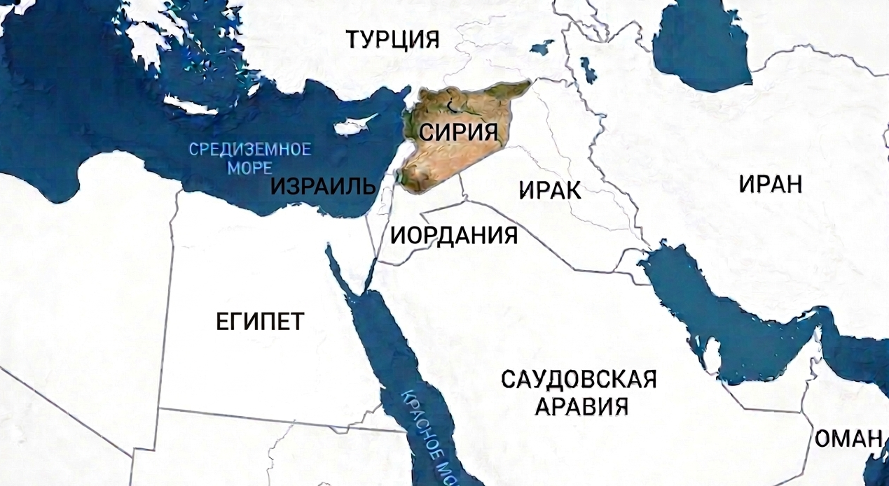
1944–1954: первые шаги
Дипломатические отношения установлены в 1944 году, ещё при французском мандате. Москва поддержала независимость Сирии (1946), что создало кредит доверия. В 1949–1954 годах, при прозападном режиме Шишакли, контакты заморозились, но после его свержения в 1954 году началось сближение.
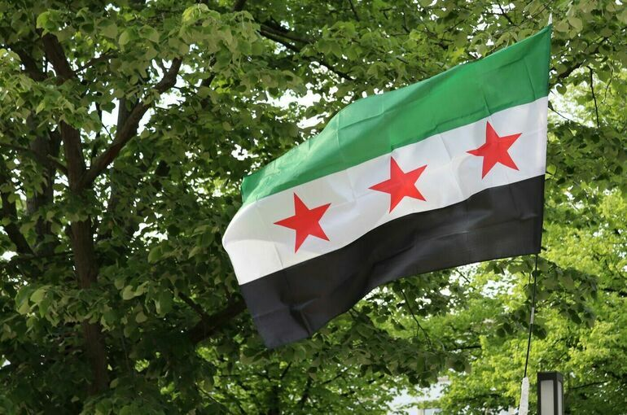
1956–1970: от Суэца до Шестидневной войны
После Суэцкого кризиса 1956 года Сирия стала одним из главных арабских партнёров СССР. В 1958–1961 годах входила в ОАР вместе с Египтом. После поражения в Шестидневной войне (1967) СССР экстренно перевооружил сирийскую армию, потерявшую Голанские высоты.
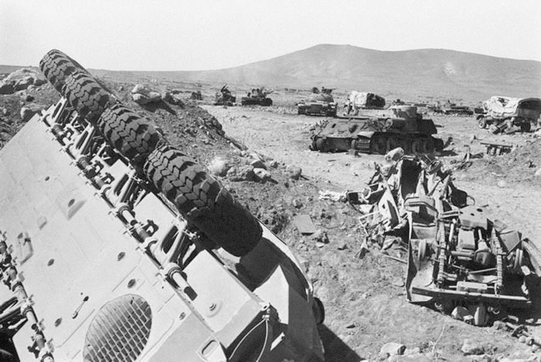
Хафез Асад (1970–2000): архитектор советско-сирийского союза
Придя к власти в ноябре 1970 года, Хафез Асад сделал ставку на СССР как на главного военно-политического партнёра. В 1971 году Советский Союз получил пункт материально-технического обеспечения ВМФ в Тартусе — единственную советскую базу в Средиземном море. Асад лично встречался с Брежневым, Подгорным и Косыгиным. Именно при нём были подписаны все ключевые соглашения.
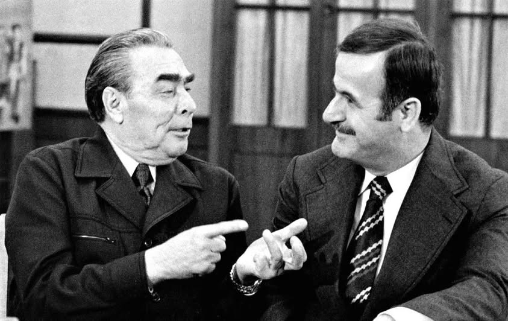
Решающая роль СССР
6 октября 1973 года Сирия совместно с Египтом атаковала Израиль. Сирийская армия была оснащена советскими танками Т-54/Т-55, МиГ-21, ПВО С-75. Когда Израиль начал контрнаступление, СССР организовал массированный «воздушный мост» — более 900 самолёто-вылетов с оружием и боеприпасами. Это спасло Дамаск от военного разгрома.
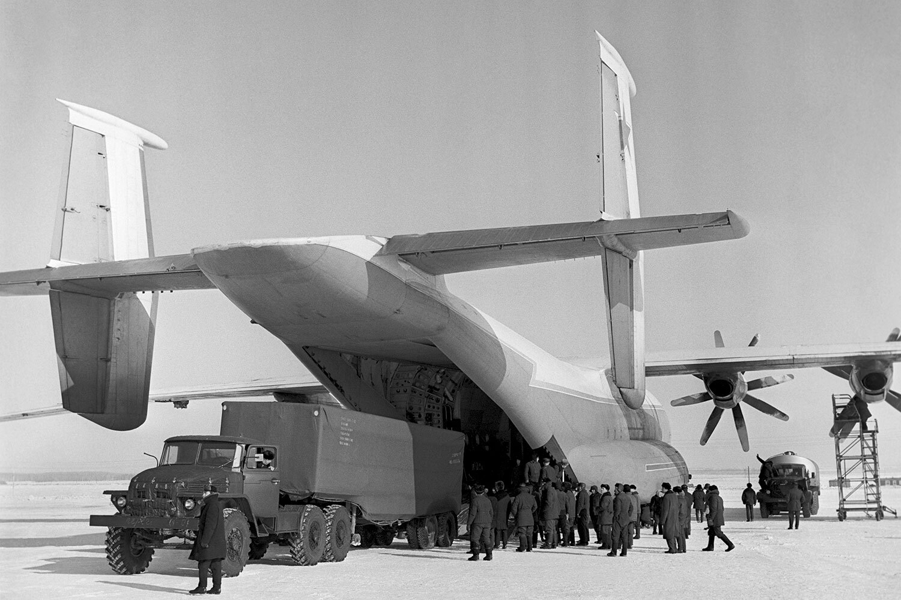
Итоги для Сирии
Сирия не вернула Голанские высоты, но нанесла серьёзные потери израильской армии. Престиж Асада и СССР в арабском мире вырос. После войны Москва списала Сирии значительную часть военных долгов и начала поставки новейших систем — МиГ-23, Т-72, С-125 «Нева».
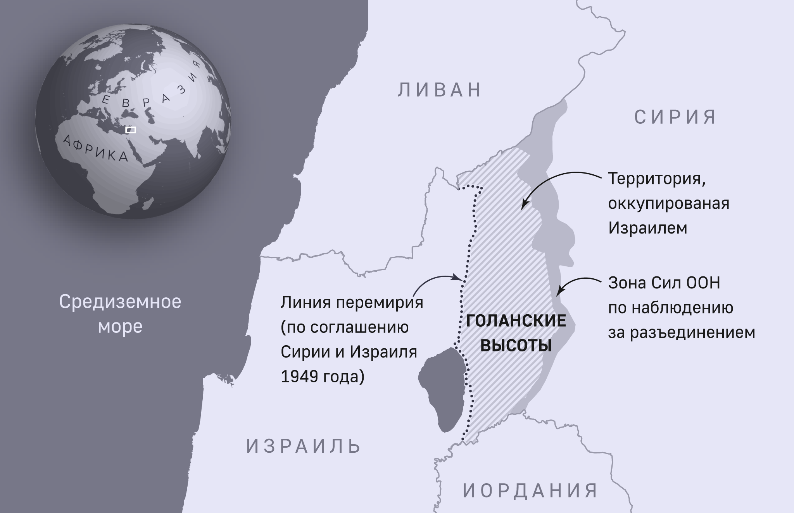
Сирия против Израиля в небе над Ливаном
В июне 1982 года Израиль вторгся в Ливан, чтобы разгромить базы ООП (Организация Освобождения Палестины). Сирийские войска, находившиеся в Ливане, вступили в бои. СССР не стал воевать напрямую, но резко нарастил военную помощь Сирии, поставляв туда много современного вооружения. Советские военные советники участвовали в планировании операций ПВО.
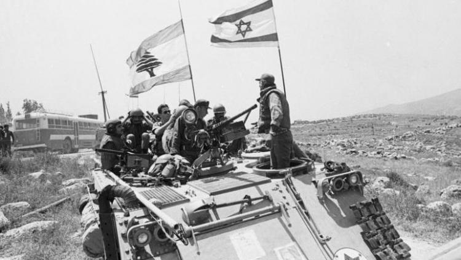
Воздушные бои и потери
Израильская авиация нанесла тяжёлый урон сирийским ПВО в долине Бекаа (уничтожено около 18 батарей ЗРК). Однако сирийские лётчики на МиГ-23 и МиГ-21 сбили по разным данным от 30 до 60 израильских самолётов (данные разнятся). СССР немедленно восполнил потери, поставив новые ракеты и комплексы. Это был самый интенсивный советско-израильский прокси-конфликт холодной войны.
Политические последствия
Несмотря на тактическое поражение, Сирия сохранила влияние в Ливане. СССР продемонстрировал готовность защищать союзника. В 1983 году советско-сирийское военное сотрудничество достигло пика: в Сирии находилось около 8 000 советских военных специалистов. Асад получил статус «непотопляемого авианосца» Москвы.
ПМТО ВМФ СССР в Тартусе
В 1971 году СССР создал в Тартусе пункт материально-технического обеспечения (ПМТО) — единственную военную базу в Средиземном море. Строительство вели советские военные инженеры, были оборудованы причалы, ремонтные мастерские, склады топлива и казармы. База обеспечивала постоянное присутствие кораблей 5-й Средиземноморской эскадры, позволяла контролировать морские пути и быстро реагировать на кризисы (например, война Судного дня 1973 года). После распада СССР база сохранилась и стала ключевым активом России в регионе.
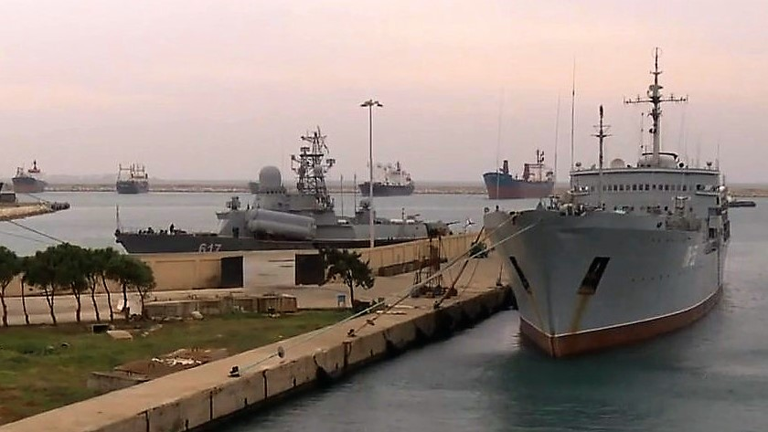
Евфратская плотина (Тишрин)
В 1970–1980-х годах СССР помог Сирии построить гидроэлектростанцию «Тишрин» на Евфрате. Советские специалисты участвовали в проектировании, поставили турбины и генераторы. Плотина увеличила орошаемые земли на 150 000 гектаров, обеспечила страну электроэнергией и позволила регулировать сток реки. Это был один из крупнейших советских инфраструктурных проектов на Ближнем Востоке после Асуанской плотины.
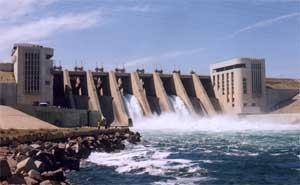
Космический полёт Мухаммеда Фариса
30 июля 1985 года Фарис вылетел в космос в качестве космонавта-исследователя на борту космического корабля «Союз ТМ-3», 22 июля 1987 года в составе первого экипажа, посетившего орбитальную космическую станцию «Мир». Фарису приписывают доставку первого зарегистрированного образца земной пыли в космос — это был флакон с почвой из Дамаска. Фарис был удостоен звания Героя Советского Союза 30 июля 1987 года; он также был награжден орденом Ленина.
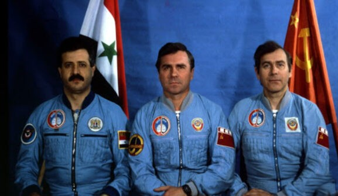
Танкоремонтный завод в Хомсе
В 1970-е годы СССР построил в Хомсе крупный танкоремонтный завод. Это предприятие стало главной ремонтной базой для сирийской бронетехники — танков Т-54, Т-55, Т-62 и БМП. Завод позволял поддерживать боеспособность армии в условиях постоянных конфликтов. Настолько важным был этот объект, что в 2015 году его восстанавливали при участии России для нужд сирийской армии.
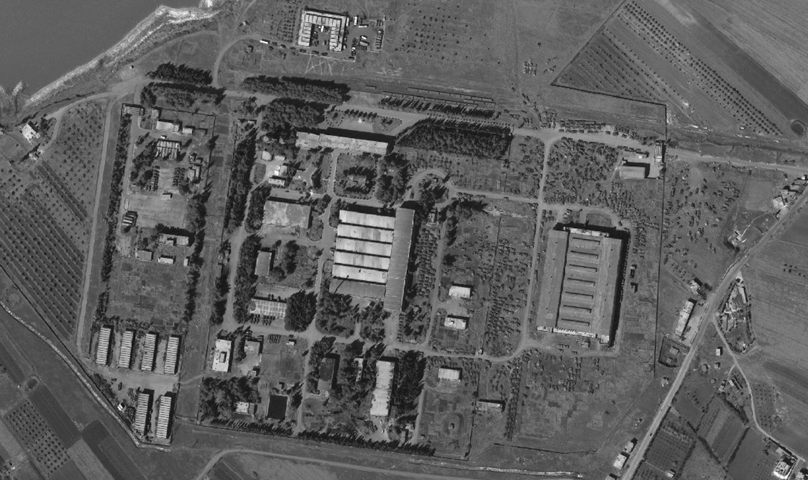
В отличие от Египта не денонсировался
8 октября 1980 года в Москве был подписан Договор о дружбе и сотрудничестве между СССР и Сирией сроком на 20 лет. Он предусматривал взаимные консультации при угрозе миру, военную помощь в случае агрессии и развитие экономических связей. Сирия никогда не денонсировала этот договор — он формально действовал до распада СССР и был пролонгирован Россией.
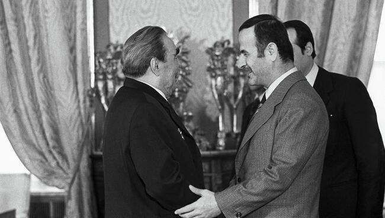
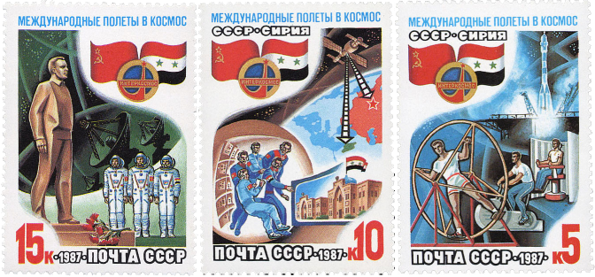
В разработке
Материалы готовятся
СССР и Ирак:
от сотрудничества к разрыву
История отношений СССР и Ирака — это пример того, как стратегическое партнёрство может рухнуть за несколько лет. С 1958 года Москва и Багдад развивали экономические и военные связи, достигли пика в 1970-е, но вторжение Ирака в Кувейт и поддержка СССР санкций ООН поставили крест на многолетнем сотрудничестве.
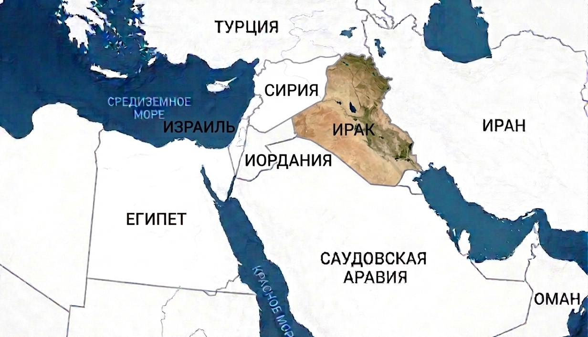
Первые контакты и разрыв
Дипломатические отношения между СССР и Королевством Ирак были установлены 9 сентября 1944 года. Однако из-за пробританской ориентации монархии они носили формальный характер. В 1955 году Ирак вступил в прозападный Багдадский пакт (военно-политическая группировка на Ближнем и Среднем Востоке, созданная по инициативе Великобритании, США и Турции и существовавшая в 1955—1979 годах. Также известный, как СЕНТО), что привело к разрыву отношений с Москвой.
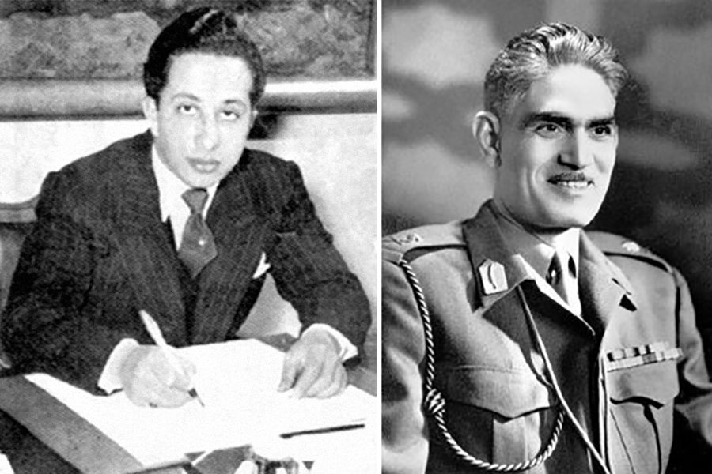
Революция 1958 года — новый старт
14 июля 1958 года в Ираке свергли монархию. Новое правительство во главе с Абдель Керимом Касемом вышло из прозападных блоков. СССР немедленно признал республику, и отношения были восстановлены в июле того же года. 16 марта 1959 года подписано первое соглашение об экономическом и техническом сотрудничестве — начался период активного сближения.
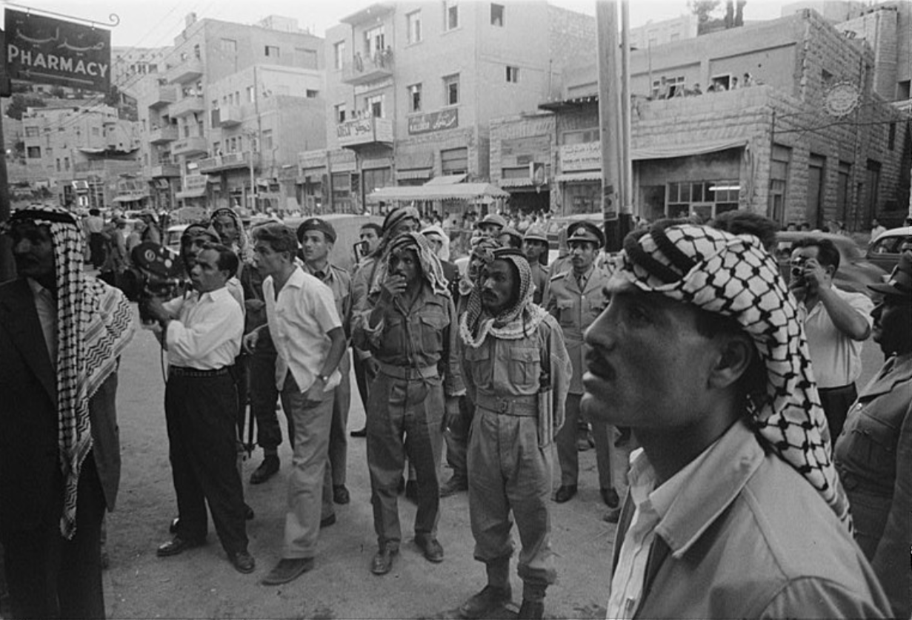
1972: Договор о дружбе и сотрудничестве
В феврале 1972 года Москву посетил Саддам Хусейн, тогда вице-президент Ирака. Результатом визита и ответного визита Алексея Косыгина в Багдад стало подписание 9 апреля 1972 года Договора о дружбе и сотрудничестве сроком на 15 лет. Документ закрепил стратегическое партнёрство: СССР получил надёжного союзника в регионе, а Ирак — мощную поддержку в развитии экономики и обороны. Опираясь на советскую поддержку, Ирак национализировал нефтяную промышленность.
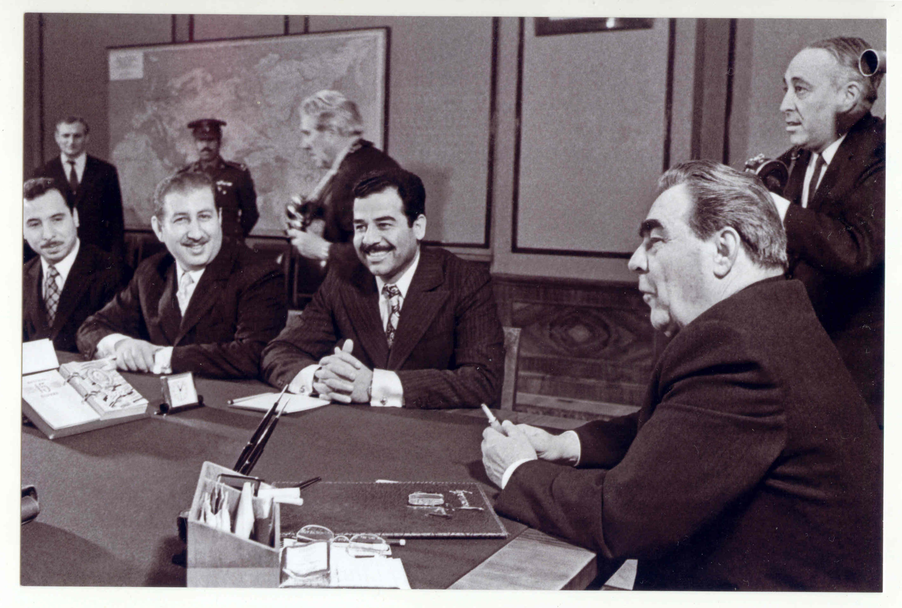
Нефть
СССР помог Ираку освоить огромное нефтяное месторождение Северная Румейла (крупнейшее нефтяное месторождение Ближнего Востока на тот момент). Ввод в действие Северной Румейлы состоялся 19 апреля 1972 года. В 1972 году добыча нефти на Северной Румейле составила 5 млн. тонн, а через три года – уже 42 млн тонн.
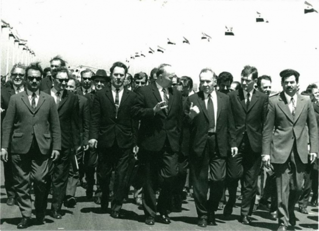
Военно-техническое сотрудничество
В 1958–1990 годах Ирак был одним из крупнейших импортёров советского оружия. До 80% вооружения иракской армии было советским. СССР построил в Ираке множество военных заводов и передал более 60 лицензий на производство оружия. Помимо прямой поставки техники СССР обучал иракских офицеров и специалистов, советские предприятия выполняли ремонт поставленной спецтехники..
Иракская медецина
Саддаму Хусейну удалось при помощи СССР создать фармацевтическую промышленность и неплохую медицинскую систему. Строительство фармацевтического завода в Самарре (город в Ираке, не Самара) было задумано в 1959 году, а завершилось толко в 1970 году. После окончания строительства предприятие в Самарре вошло в состав Государственной фармацевтической компании (State company for drugs industries), которая, в свою очередь, была подчинена Министерству промышленности страны. Фабрика производила более 350 видов лекарств, среди них антибиотики, болеутоляющие, сиропы против простуды, а также различные виды медицинского оборудования.
В 1980 году началась кровопролитная война между Ираком и Ираном. СССР оказался в сложном положении: с одной стороны, Ирак был союзником по договору, с другой — Москва не хотела полного разгрома Ирана и укрепления там проамериканских сил. СССР официально объявил нейтралитет, но продолжал поставки оружия в Ирак, так как эта страна оставалась крупнейшим покупателем советского вооружения. Однако Москва сдерживала активность Багдада, что привело к первому охлаждению в отношениях.
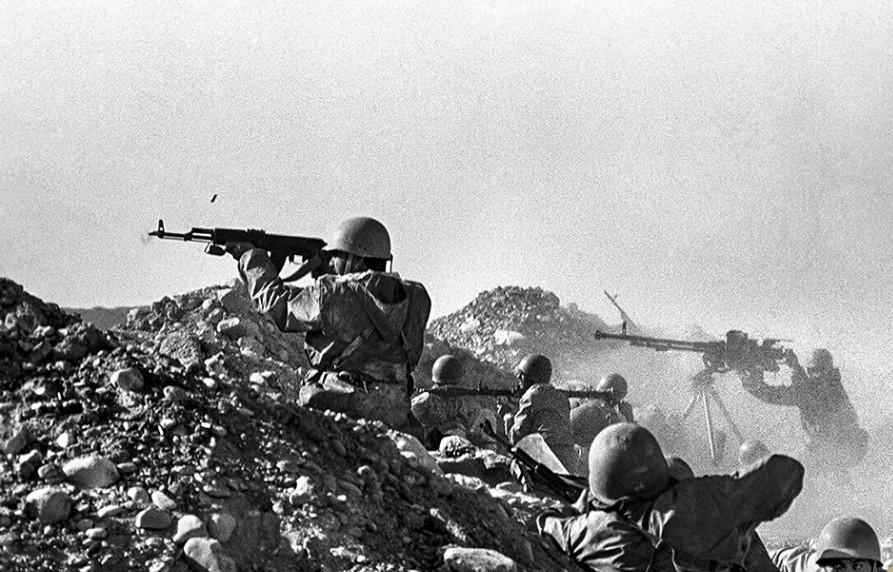
Конфликт с Кувейтом
После изнурительной войны с Ираном экономика Ирака оказалась в упадке, а внешний долг превышал $60 млрд. Саддам Хусейн обвинил Кувейт в превышении квот на добычу нефти, что обрушило цены, и в «краже» нефти из пограничных месторождений. 2 августа 1990 года иракские войска вошли в Кувейт, что вызвало резкое осуждение на Западе.
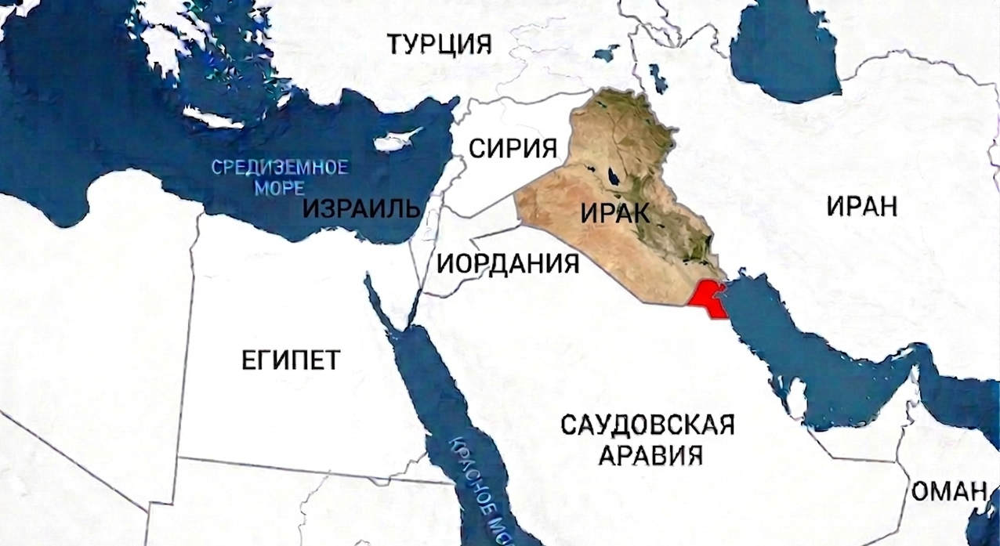
Позиция СССР: санкции вместо поддержки
СССР, стремившийся улучшить отношения с Западом и нуждавшийся в экономической помощи, поддержал резолюции ООН о санкциях против Ирака. Это решение стало поворотным моментом. Ирак воспринял это как предательство. После войны 1991 года сотрудничество фактически прекратилось, а эмбарго ООН на поставки оружия действовало до 2004 года.
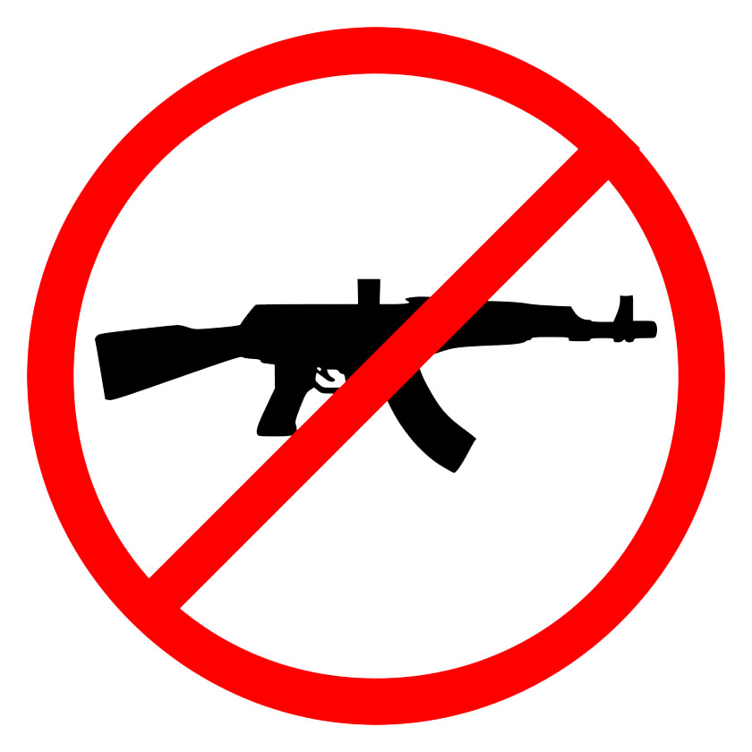
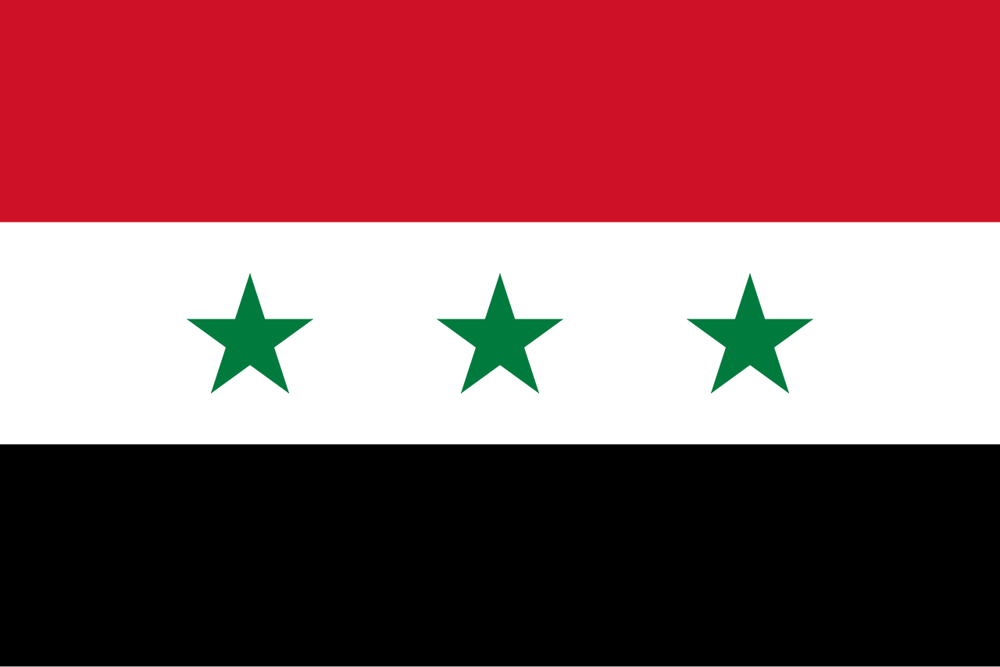
В разработке
Материалы готовятся
В разработке
Материалы готовятся
В разработке
Материалы готовятся
В разработке
Материалы готовятся
В разработке
Материалы готовятся